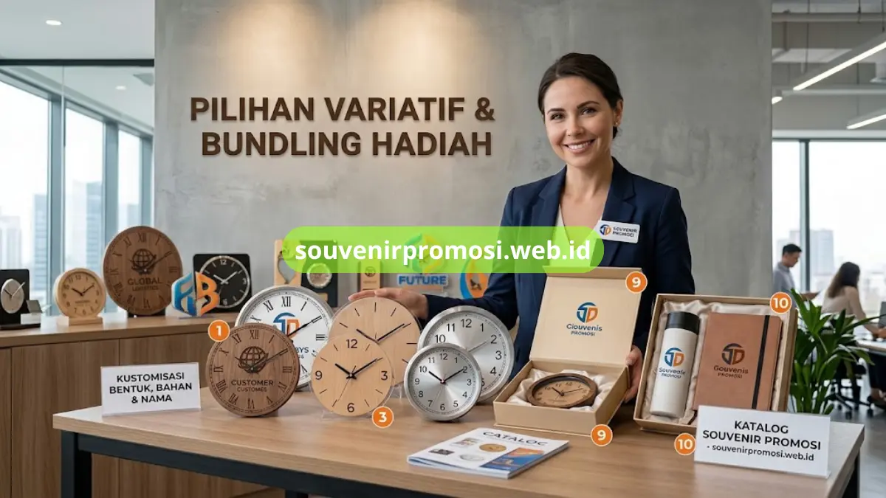

Jam dinding custom adalah salah satu souvenir promosi perusahaan yang paling efektif karena tampil setiap hari di ruang kerja klien maupun mitra bisnis. Setiap kali dilihat, logo dan identitas brand Anda ikut terlihat tanpa biaya tambahan.
Artikel ini merangkum sepuluh ide model jam dinding custom yang paling banyak dipesan untuk kebutuhan hadiah korporat dan bisa langsung dipesan melalui Souvenir Promosi.
Poin Penting
- Jam dinding custom cocok untuk hadiah ulang tahun perusahaan, seminar, dan gift klien.
- Tersedia pilihan bahan akrilik, kayu, dan metal dengan hasil cetak logo tajam.
- Bentuk bulat klasik hingga bentuk custom sesuai logo brand dapat dipesan sesuai kebutuhan.
- Souvenir Promosi melayani cetak satuan hingga jumlah besar untuk kebutuhan korporat.
- Pemesanan dapat dilakukan langsung melalui katalog di souvenirpromosi.web.id.
Daftar Isi
Model Klasik dan Modern untuk Kantor
1. Jam Dinding Bulat Klasik dengan Cetak Logo Penuh
Model bulat klasik adalah pilihan paling aman dan paling sering dipesan perusahaan karena mudah dipadukan dengan ruangan apa pun, baik kantor, ruang tunggu, maupun area resepsionis. Bidang cetak yang luas memungkinkan logo perusahaan tampil besar dan jelas di bagian tengah maupun sekeliling angka jam.
Desain ini biasanya menggunakan dial berdiameter 25-30 cm dengan warna dasar yang bisa disesuaikan dengan identitas brand, seperti putih polos, warna korporat, atau kombinasi dua warna. Karena bentuknya universal, model ini menjadi pilihan pertama yang ditawarkan tim Souvenir Promosi kepada klien korporat yang baru pertama kali memesan.
2. Jam Dinding Akrilik Custom Bentuk Logo Perusahaan
Untuk perusahaan yang ingin tampil lebih berbeda, jam dinding akrilik yang dipotong mengikuti bentuk logo menjadi solusi menarik. Bahan akrilik memberi kesan modern, ringan, dan mudah dibentuk sesuai siluet logo, baik itu bentuk lingkaran, persegi, maupun bentuk custom lain.
Hasil cetak pada akrilik cenderung lebih tajam dan tahan lama dibanding bahan kertas atau kanvas biasa, sehingga cocok dijadikan souvenir jangka panjang yang tetap terlihat rapi meski sudah dipakai bertahun-tahun.
3. Jam Dinding Kayu untuk Kesan Premium dan Elegan
Jam dinding berbahan kayu solid atau MDF lapis memberikan kesan hangat dan premium, sering dipilih untuk souvenir kepada klien VIP, mitra strategis, atau relasi bisnis level direksi. Serat kayu alami memberi nuansa natural yang berbeda dari jam dinding plastik atau akrilik pada umumnya.
Teknik cetak yang umum digunakan pada bahan kayu adalah UV print atau laser engraving, keduanya menghasilkan tampilan logo yang menyatu dengan permukaan dan tidak mudah pudar.
4. Jam Dinding Custom dengan Kalender Tahunan Terintegrasi
Model ini menggabungkan fungsi penunjuk waktu dengan kalender tahunan pada bagian bawah atau sekeliling dial jam. Kombinasi ini membuat jam dinding lebih fungsional sebagai pengingat tanggal sekaligus media promosi yang dilihat setiap hari sepanjang tahun.
Souvenir jenis ini banyak dipesan menjelang pergantian tahun sebagai hadiah akhir tahun untuk klien, vendor, maupun karyawan internal perusahaan.
5. Jam Dinding Minimalis untuk Kantor Modern
Bagi perusahaan dengan identitas brand yang mengusung konsep minimalis, model jam dinding tanpa angka dengan garis indikator sederhana menjadi pilihan yang relevan. Logo perusahaan biasanya ditempatkan di bagian bawah dial dengan ukuran yang proporsional, tidak mendominasi tampilan.
Gaya ini cocok untuk perusahaan di sektor teknologi, konsultan, maupun startup yang ingin tampilan souvenirnya selaras dengan citra brand yang bersih dan profesional.
Ukuran Besar dan Bahan Khusus
6. Jam Dinding Custom Ukuran Besar untuk Area Publik
Untuk ditempatkan di lobi, ruang meeting besar, atau area publik seperti pabrik dan gudang, tersedia opsi jam dinding dengan diameter di atas 40 cm. Ukuran besar ini membuat logo perusahaan terlihat jelas bahkan dari jarak jauh, sehingga efektif sebagai media branding di ruang dengan traffic tinggi.
7. Jam Dinding Custom Bahan Metal untuk Kesan Industrial
Bahan metal atau kombinasi metal dan kaca memberi kesan kokoh dan tahan lama, sering dipilih oleh perusahaan di sektor manufaktur, konstruksi, atau otomotif. Cetak logo pada bahan ini umumnya menggunakan teknik etching atau UV print khusus permukaan metal agar hasil tetap presisi.
Personalisasi dan Kemasan Eksklusif
8. Jam Dinding Custom Set dengan Nama Klien atau Perusahaan
Beberapa perusahaan memesan jam dinding dengan tambahan nama klien atau nama perusahaan penerima di bagian bawah logo. Personalisasi ini membuat souvenir terasa lebih eksklusif dan sering digunakan untuk hadiah ulang tahun perusahaan mitra atau penghargaan kerja sama jangka panjang.
9. Jam Dinding Custom dengan Kemasan Box Eksklusif
Selain desain jam itu sendiri, kemasan turut menentukan kesan pertama saat souvenir diterima. Opsi box eksklusif berbahan kertas tebal dengan cetak logo perusahaan pada bagian luar box banyak diminati untuk pengiriman hadiah kepada klien di luar kota maupun sebagai hantaran acara resmi perusahaan.

10. Jam Dinding Custom Paket Bundling dengan Souvenir Lain
Untuk kebutuhan gift set korporat, jam dinding custom dapat dipesan dalam bentuk paket bundling bersama souvenir lain seperti tumbler, notebook, atau payung custom. Paket ini praktis digunakan untuk acara gathering, seminar, maupun hadiah akhir tahun dalam jumlah besar.
Sepuluh ide di atas dapat disesuaikan dengan identitas brand, budget, dan tujuan pemberian souvenir perusahaan Anda, mulai dari model klasik yang aman hingga desain custom bentuk logo yang lebih eksklusif. Lihat kembali model klasik dan modern untuk kantor di atas sebagai acuan sebelum menentukan pilihan.
Cara Memesan Jam Dinding Custom
Semua model tersebut tersedia dan siap dipesan melalui katalog lengkap Souvenir Promosi di souvenirpromosi.web.id, lengkap dengan pilihan bahan, ukuran, dan teknik cetak sesuai kebutuhan perusahaan Anda.
Hubungi tim Souvenir Promosi sekarang untuk konsultasi desain gratis dan dapatkan penawaran harga terbaik untuk pemesanan jam dinding custom dalam jumlah besar melalui souvenirpromosi.web.id.